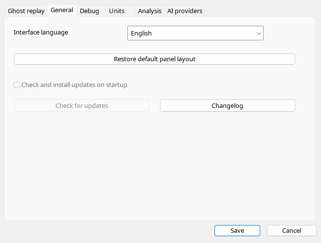

Automatic detects the Windows UI locale including regional variants. A manual language selection remains until Automatic is restored. Languages without a dedicated manual use English CHM. Portable updates are deliberately disabled: an old INI opt-in cannot start downloads. The supplied Setup only displays a development notice. Update by replacing program files after closing the application.
| Option / action | Behavior and limitations |
|---|---|
| Language | Automatic detects Windows UI language and regional variants, falling back to English when unsupported. A named locale overrides detection and is remembered. |
| RTL | Arabic/Hebrew affect ordinary interface direction, not physical cockpit geometry. Returning to LTR restores normal layout direction. |
| Automatic updates | Disabled in this portable release; changing INI does not activate an updater. Setup is a notice-only placeholder. |
| Check updates | Also disabled. Obtain a release manually and preserve user data. |
| Changelog | Polish for Polish UI, otherwise English. The ShowChangeLog argument opens it after startup. |
| Default layout | Restores panel docking and sizes after monitor/layout changes; it is not a recording-data reset. |
